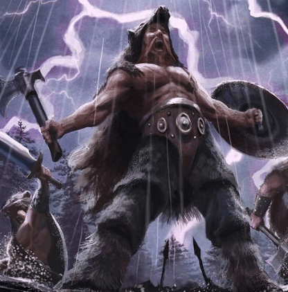

Classes > Warriors > Savage
Non-Lawful only. Also known as Barbarian or Berserker. A warrior of the wilds who harnesses the power of their adrenaline and bestial instincts to become a whirlwind of blood and steel.
Savages eschew self-preservation to leap into battle with the ferocity of a wild animal, tearing apart anything that walks until the source of their fury is neutralized. They are typically born and raised far from civilized society. Where ordinary warriors see violence as a means to an end, Savages revel in it how a predatory animal finds itself entranced in its own hunt, allowing themselves to fall into manic fits similar to religious fervor.
Savages have advantage on Intimidation. They are resistant to physical damage when not wearing armor, meaning an attacker must roll twice and deal the worst damage die against them, and resistant to cold and poison in general. Their Battle Trance, called Rage, is unique: it can be invoked from level 1 a number of times per day equal to a third of their level rounded up, renders them immune to any mind-altering effect, and once invoked doesn't have to end until something is killed. Raging Savages also have advantage on any STR check, gain +1 point of weapon damage for every 10 health points lost out of their current maximum, move at twice the normal land speed for their race and can track creatures by scent, but can only use AGI skills.
Level 2: Savages do not suffer a -4 AGI penalty from being surprised.
Level 4: Savages can choose to be proficient with weapons, gaining advantage on accuracy and the ability to throw them like a projectile which deals twice the weapon's melee damage. They may instead kin with any chosen animal. Depending on whether the animal is smaller than their own size or larger, they gain a +4 bonus while raging to AGI or STR respectively. This bonus is lost if they wear armor.
Level 8: Savages climb at normal speed, and ignore death for 1 rd. after being downed.
Level 12: The Savage's rage no longer guarantees damage taken to be critical. They may also roar (as their chosen animal if kinned) to grant their 4th level bonus to allies.
|
Level |
Bonus/atk. |
Bonuses |
Level |
Bonus/atk. |
Bonuses |
|
1 |
+1 |
Kick, Resistance, Rage |
11 |
+11/+6/+1 |
+2 acc., Crit@17, Triplestrike |
|
2 |
+2 |
Uncanny Dodge |
12 |
+12/+7/+2 |
Feat, Improved Rage, Roar |
|
3 |
+3 |
Bash |
13 |
+13/+8/+3 |
Disarm |
|
4 |
+4 |
Feat, Weaponry, Kinning |
14 |
+14/+9/+4 |
- |
|
5 |
+5 |
Cleave, Doublestrike |
15 |
+15/+10/+5 |
Riposte, Second Wind II |
|
6 |
+6/+1 |
- |
16 |
+16/+11/+6/+1 |
Feat |
|
7 |
+7/+2 |
Fighting Style |
17 |
+17/+12/+7/+2 |
Quadstrike |
|
8 |
+8/+3 |
Feat, Speed, Ignore Death |
18 |
+18/+13/+8/+3 |
- |
|
9 |
+9/+4 |
Second Wind |
19 |
+19/+14/+9/+4 |
Feat |
|
10 |
+10/+5 |
- |
20 |
+20/+15/+10/+5 |
Second Wind III |